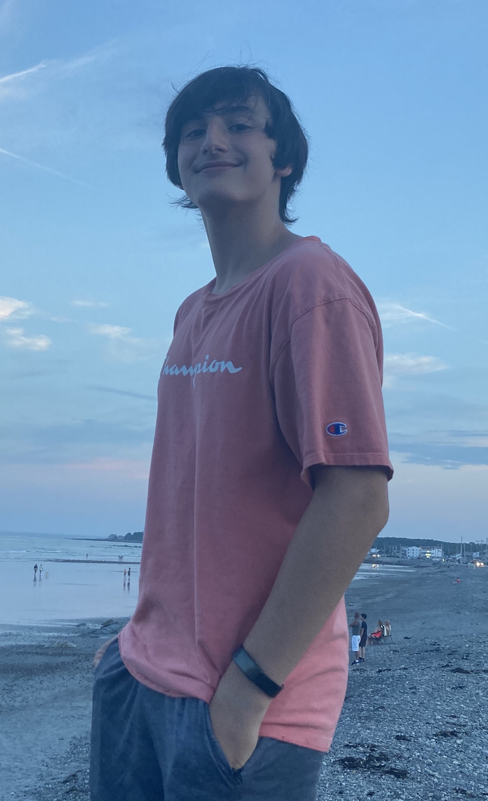

Bio:
My name is Max Glassman and I am located in the Northern New Jersey/New York City area. I am entering my sophomore year
of high school at Northern Valley Regional High School in Demarest, NJ. My interests are computer science, mechanical
engineering, and general automotive related topics.
Github: @XtraSnaxy
LinkedIn: Profile
Contact Information: max_glassman@yahoo.com